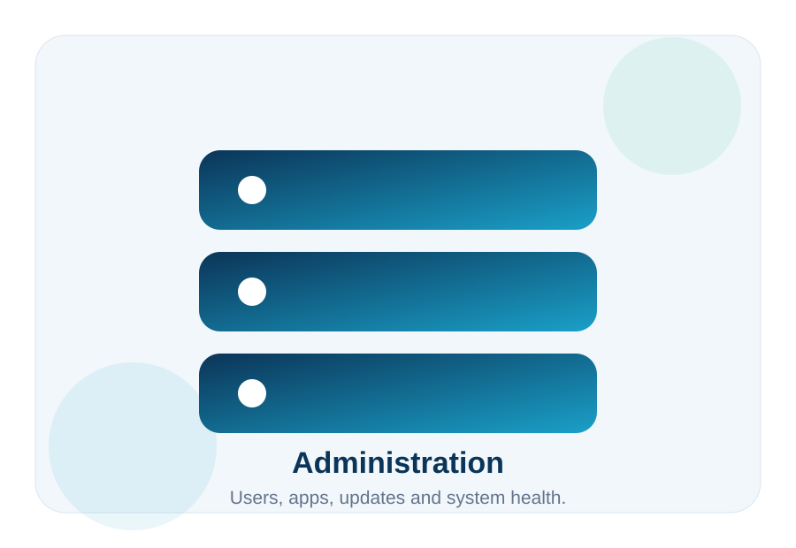

Update Center
Check for new releases, download updates, verify requirements and warn before downgrades or incompatible updates.
DNA-Nexus includes tools for managing users, storage, applications, updates, audit logs, backups and system health. This makes it suitable for business and operator-managed environments.
Administrators can manage users, storage quotas, applications, updates, audit history and server status from one control panel.

Check for new releases, download updates, verify requirements and warn before downgrades or incompatible updates.
Track important events and filter by user fingerprint, session ID, IP address or event type. Export as JSON or CSV.
Back up important server data automatically or manually with different intervals and retention policies.
Use fast storage for uploads and automatically move files to slower long-term storage according to configured rules.
Show CPU load, memory usage, disk health, temperatures, network usage and storage status. Drive LED blinking can help identify disks on supported systems.
DNA-Nexus can become a differentiated cloud product for homes, businesses, clubs and local organizations.